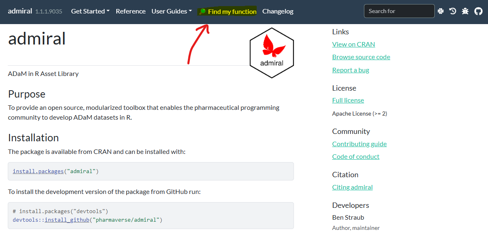

library(dplyr)
library(admiral)
library(tibble)
# Example 1
advs <- tibble::tribble(
~USUBJID, ~VSTEST, ~AVAL,
"01-701-1015", "Height", 147.32,
"01-701-1015", "Weight", 53.98,
"01-701-1023", "Height", 162.56,
"01-701-1023", "Weight", NA,
"01-701-1028", "Height", NA,
"01-701-1028", "Weight", NA,
"01-701-1033", "Height", 175.26,
"01-701-1033", "Weight", 88.45
)
# Example 1
# A simple defintion with multiple conditions
definition2 <- exprs(
~VSTEST, ~condition, ~AVALCAT1, ~AVALCA1N,
"Height", AVAL > 160, ">160 cm", 1,
"Height", AVAL <= 160, "<=160 cm", 2,
"Weight", AVAL > 70, ">70 kg", 1,
"Weight", AVAL <= 70, "<=70 kg", 2
)
derive_vars_cat(
dataset = advs,
definition = definition2,
by_vars = exprs(VSTEST)
)
# Example 2
# A simple defintion with slightly more complex conditions
definition3 <- exprs(
~VSTEST, ~condition, ~AVALCAT1, ~AVALCA1N,
"Height", AVAL > 170, ">170 cm", 1,
"Height", AVAL <= 170 & AVAL > 160, "<=170 cm", 2,
"Height", AVAL <= 160, "<=160 cm", 3
)
derive_vars_cat(
dataset = advs,
definition = definition3,
by_vars = exprs(VSTEST)
)
# Example 3
# Now using for MCRITyML and the MCRITyMN variables
adlb <- tibble::tribble(
~USUBJID, ~PARAM, ~AVAL, ~AVALU, ~ANRHI,
"01-701-1015", "ALT", 150, "U/L", 40,
"01-701-1023", "ALT", 70, "U/L", 40,
"01-701-1036", "ALT", 130, "U/L", 40,
"01-701-1048", "ALT", 30, "U/L", 40,
"01-701-1015", "AST", 50, "U/L", 35
)
definition_mcrit <- exprs(
~PARAM, ~condition, ~MCRIT1ML, ~MCRIT1MN,
"ALT", AVAL <= ANRHI, "<=ANRHI", 1,
"ALT", ANRHI < AVAL & AVAL <= 3 * ANRHI, ">1-3*ANRHI", 2,
"ALT", 3 * ANRHI < AVAL, ">3*ANRHI", 3
)
adlb %>%
derive_vars_cat(
definition = definition_mcrit,
by_vars = exprs(PARAM)
)Introduction
As crazy as it may sound, the {admiral} package is nearing its third CRAN birthday: our first release dates all the way back to 17th February 2022! Time really does fly when you’re programming ADaMs in R. The codebase has grown quite a lot! For some context, if you’d only allowed yourself to write twenty lines of code a day, starting from the 17th February 2022, by now you would have compiled the whole of the {admiral} codebase (excluding documentation and unit tests). And so, what better early birthday present for {admiral} than the new and exciting 1.2 release!
Read through this blog post to find out more about the exciting contents of the 1.2 release, as well some of our plans for 2025.
New Features for 1.2
As always, we have listed the full set of 1.2 updates in our changelog, and have picked out only a select few updates to discuss.
To commence, for the first time since {admiral} 1.0 we have added new functions! The three new functions available in this release are:
- derive_vars_cat(): Derive Categorization Variables Like
AVALCATyandAVALCAyN. - derive_vars_crit_flag(): Derive ADaM-compliant criterion flags to facilitate subgroup analyses like
CRITy,CRITyFL, andCRITyFN. - transform_scale(): Transform questionnaire values onto a standardized scale.
New function: derive_vars_cat()
We wanted a function that could take in user-defined inputs for category-like variables, e.g. AVALCATy and AVALCAyN. While this is typically defined in the metadata for an ADaM, we thought having a dedicated function in {admiral} could help either with double programming or smaller projects that don’t have metadata fully developed. Let us know what you think!
Below you can expand to get a few simple examples of this new function with dummy data in action. Be sure to check out the function’s documentation on the admiral website for full understanding of derive_vars_cat().
TipExpand for Full Code Walkthrough
New function: derive_vars_crit_flag()
The function derives ADaM-compliant criterion flags, e.g. CRIT1FL, to facilitate subgroup analyses.
If a criterion flag can’t be derived with this function, the derivation is not ADaM-compliant. It helps to ensure that:
the condition of the criterion depends only on variables of the same row,
the CRITyFL is populated with valid values, i.e, either “Y” and NA or “Y”, “N”, and NA,
the CRITy variable is populated correctly.
Below you can expand to get a few simple examples of this new function with dummy data in action. Be sure to check out the function’s documentation on the {admiral} website for a full understanding of derive_vars_crit_flag().
TipExpand for Full Code Walkthrough
library(admiral)
library(tibble)
adbds <- tribble(
~PARAMCD, ~AVAL,
"AST", 42,
"AST", 52,
"AST", NA_real_,
"ALT", 33,
"ALT", 51
)
# Create a criterion flag with values "Y" and NA
derive_vars_crit_flag(
adbds,
condition = AVAL > 50,
description = "Absolute value > 50"
)
# Create criterion flag with values "Y", "N", and NA and parameter dependent
# criterion description
derive_vars_crit_flag(
adbds,
crit_nr = 2,
condition = AVAL > 50,
description = paste(PARAMCD, "> 50"),
values_yn = TRUE,
create_numeric_flag = TRUE
)New function: transform_scale()
The final new function we are adding is transform_scale(). Coming directly from a user request, with this function we now have functionality to linearly transform a vector of values with a certain associated range into values from another range.
library(admiral)
transform_range(
source = c(1, 4, 3, 6, 5),
source_range = c(1, 5),
target_range = c(0, 100)
)Within ADaM programming, this is a common task, arising for instance when transforming questionnaire values into a standardized scale (e.g. 1-100). As such, we see this function being employed principally within calls to derive_param_computed() during the creation of datasets such as ADQS. You can read more about this topic within our Questionnaire ADaMs vignette.
Deprecation Strategy
Important
We would like all users to be aware that a new deprecation strategy is being adopted by the {admiral} team. You can find the details linked here in our Programming Strategy Guide
Previously, the team were going to keep “superseded” functions around indefinitely, i.e., a function that was replaced with a better function would be kept in {admiral} and maintained until universe-death. Unfortunately, that places an enormous tech-debt on future maintainers. It was decided that these “superseded” functions should in fact be deprecated and slowly removed from the code base. Please check out our Programming Strategy Guide if you would like to better understand this process of removing functions from {admiral}.
Resources for admiral: admiraldiscovery, cheatsheet, Find My Function, Working Groups
Work on {admiral} releases isn’t just limited to new functions and deprecation. The {admiral} team seeks to provide a wealth of resources and ways to get involved to keep {admiral} current and up to date.
For this release we have updated the cheatsheet so that it is in line with the additions and changes for the new release.

admiraldiscovery is a standalone website and has a nice interactive table to help identify common ADaM variables and the {admiral} functions that derive them.

Additionally, we have made the admiraldiscovery (aka “Find my function”) link more prominent on the {admiral} package website’s navigation bar to increase the user traffic to the admiraldiscovery site.

Also, from June up until now, we’ve had two working groups operating:
The ADaM Implementation Guide working group, which has been diligently consulting the ADaM IG to identify any gaps within
{admiral}functionality and/or documentation and creating issues to close the gaps.The Environments working group, which is currently reading select chapters from Advanced R in order to refresh their understanding of environments before potentially re-hashing the way these are treated in
{admiral}.
If you have any ideas for new working groups of which you’d like to be a part, reach out to us - let’s co-create {admiral} together!
admiral at Recent Conferences
This post is also a great opportunity to showcase and publicize some of the fantastic outreach that members of the {admiral} community have done since our 1.1 release back in June. A couple of highlights include:
- At useR 2024 in Salzburg:
- Edoardo Mancini and Stefan Thoma gave a presentation titled: “{admiral} - the {dplyr} of the pharmaceutical industry?” - slides here.
- At R/Pharma 2024:
- Ben Straub and Fanny Gautier led an “ADaM Workshop” using admiral, metacore/metatools and xportr to derive
ADSLandADVS- slides here, repo here.
- Ben Straub and Fanny Gautier led an “ADaM Workshop” using admiral, metacore/metatools and xportr to derive
- At PHUSE EU Connect 2024 in Strasbourg:
- Yirong Cao and Yi Yan gave a talk titled: Insights of Using {admiralonco} at BMS: Facilitating Oncology Efficacy ADaM Datasets - slides here, paper here.
- Edoardo Mancini spoke about Two hats, one noggin: Perspectives on working as a developer and as a user of the admiral R package for creating ADaMs - slides here, paper here).
- Federico Baratin gave his take on admiralvaccine Project JouRney - slides here, paper here).
As you can see, {admiral} is spreading like wildfire in the pharma industry, and we encourage anyone within our community to spread the word and continue making these super presentations. Please let us know if you present on {admiral} we would love to give you a shout out.
For the full archive of {admiral}-related presentations, please visit our Presentation Archive.
Plans for 2025
{admiral} plans for two releases in 2025 with an early summer release and an end of year release. We plan on continuing to update admiral based on user feedback. Please do not hesitate to create an issue to make documentation clearer, or if you found a pesky bug, or you have an idea for a function or something else! We love feedback and you can even implement your idea if the core team gives their approval.
{admiral} has a Discussion thread on potential ideas for our 1.3 release. You can contribute or follow along in the discussion here
A few choice items from the discussion:
{admiral}uses rlang::exprs() in a lot of it function arguments for users. We hope in a future version to hide this from users as done in tidyverse packages{admiral}has been found to be slow for merging large datasets together. In a future release we will have worked out these bottlenecks!- Currently our lab grading is kept in an excel spreadsheet. We hope to move this to a json file as well as any other metadata that might be handy for users.
- Can
{admiral}move from%>%to|>, we actually have found the base pipe to have a few limitations, but we are discussing.
Thanks for reading and happy programming in 2025!!
Last updated
2026-02-12 22:27:46.748536
Details
Reuse
Citation
BibTeX citation:
@online{straub2025,
author = {Straub, Ben and Mancini, Edoardo},
title = {\{Admiral\} 1.2 Is Here!},
date = {2025-01-17},
url = {https://pharmaverse.github.io/blog/posts/2025-01-17_12_admiral/12_admiral_release.html},
langid = {en}
}
For attribution, please cite this work as:
Straub, Ben, and Edoardo Mancini. 2025. “{Admiral} 1.2 Is
Here!” January 17, 2025. https://pharmaverse.github.io/blog/posts/2025-01-17_12_admiral/12_admiral_release.html.